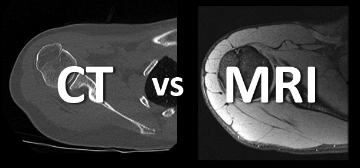

Back to Overview

Medical Imaging
Medical imaging is a field of medicine that uses different technologies to create images
of the inside of the human body. These images help doctors see organs, bones, tissues, and blood
vessels without performing surgery.
It is mainly used to diagnose illnesses, monitor the progress of diseases, and support medical
treatment. By providing detailed images, medical imaging helps doctors better understand a patient’s
condition and make informed decisions about care.
This makes it an important part of modern healthcare since it improves diagnostic accuracy,
supports early detection of health problems, and contributes to safer and more effective treatment planning.
Our work primarily focuses on **CT scans** and **MRI scans**, which are among the most commonly used imaging
modalities in clinical practice.

MRI and CT differ mainly in their use depending on the anatomical structures being examined. MRI is particularly
well suited for imaging soft tissues, such as the brain, spinal cord, muscles, ligaments, and internal organs,
because it provides high contrast between different types of soft tissue. CT, in contrast, is especially useful
for visualizing dense structures like bones and for assessing complex anatomical regions such as the chest or
abdomen. It is also commonly used to evaluate fractures or detect internal bleeding. In summary, MRI is preferred
for detailed soft tissue assessment, while CT is often chosen for examining bone structures and certain internal
body regions.
How CT and MRI Work
CT scans use X-rays to create detailed cross-sectional images by taking multiple X-ray measurements
from different angles around the body. These measurements are processed by a computer to reconstruct
thin “slices†or cross-sections of the body, which can be stacked together to form a detailed 3D representation
of the scanned area. This allows doctors to examine the body layer by layer and identify abnormalities in
specific regions.
MRI, on the other hand, uses strong magnetic fields and radio waves to generate images. It detects signals
emitted by hydrogen atoms in the body’s tissues when exposed to these magnetic fields. Similar to CT, MRI
produces multiple thin slices through the body, enabling detailed visualization of soft tissues in different
planes. These slices can also be combined into 3D images, giving clinicians a comprehensive view of the patient’s
anatomy without exposing them to ionizing radiation.
Back to Overview